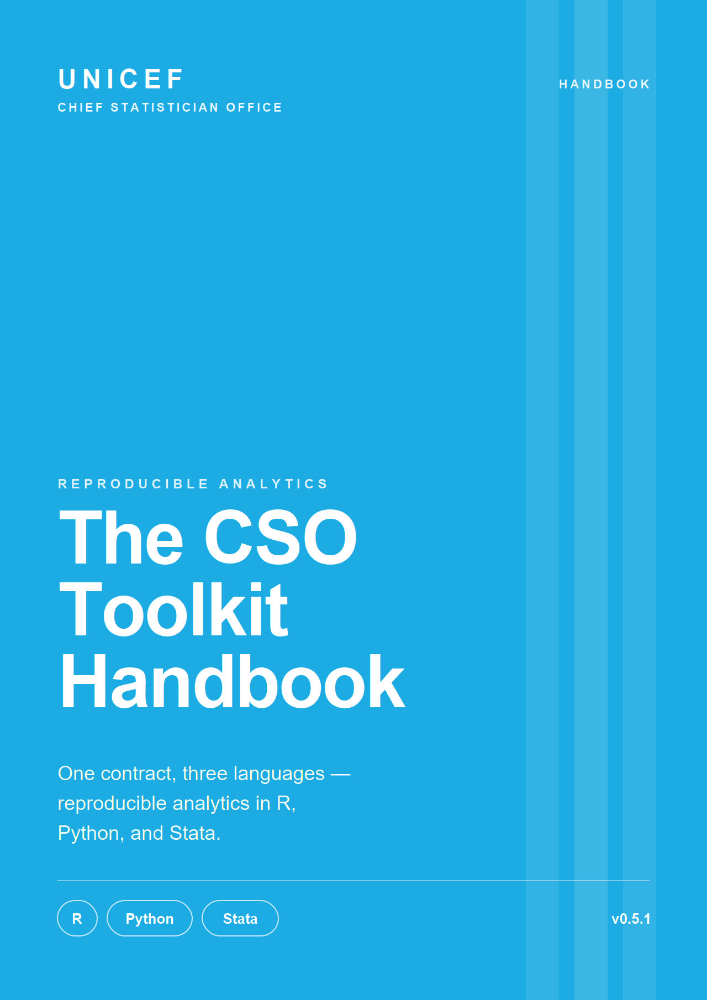

The CSO Toolkit Handbook
One contract, three languages — reproducible analytics in R, Python, and Stata
1 Welcome

cso-toolkit is the shared, cross-language contract that the UNICEF Chief Statistician Office (CSO) uses to make its analytics reproducible. The CSO runs a data warehouse: a shared store of signed-off statistical files, named dw_<sector>.<ext> (one per sector — education, water and sanitation, immunisation, and so on), that UNICEF’s public data products draw from. The repository that holds the operational copy of that warehouse is DW-Production. The toolkit is what lets anyone, not just the file’s original author, re-run a sector’s pipeline and reproduce those files exactly.
It does this by encoding one way to read, write, compare, and merge data; one way to call external APIs; one way to aggregate, version-sync, and scaffold projects — and it does so identically in R, Python, and Stata. Every call routes through wrappers that enforce provenance sidecars (a .provenance.json file written next to every output, recording who made it, when, and from what), a uniqueness check (isid — that rows are unique on a stated key), and a producer / reviewer mode contract, so that any analytics product can be re-run by someone other than its original author and yield the same numbers. This handbook documents that contract.
1.1 What cso-toolkit is
cso-toolkit (the repository unicef-drp/cso-toolkit, currently v0.5.0) is a set of small helpers that enforce one way of doing each task, grouped into five capability families. Part III gives each family its own chapter.
- IO —
dw_save,dw_use,dw_compare,dw_merge,dw_isid,dw_verify_z,dw_stage,dw_root: uniform file IO with auto-dispatch by extension, anisiduniqueness check, an automatic provenance sidecar on writes, a Z: drive mirror on canonical writes (a canonical write being the final, signed-offdw_<sector>file that downstream products cite, as opposed to an intermediate working file), and an integrity check on canonical reads. - External API —
dw_api_fetch,dw_api_cached,dw_api_inventory: a mode-aware wrapper around external data sources (UIS, SDMX, World Bank, ILO, UNSD-SDG, GitHub-raw, generic HTTP/JSON) with a deposit-side cache. - Aggregation —
aggregate_data_v2,apply_time_window,generate_agg_footnote,dw_nestweight,dw_pop,dw_regions(the earlieraggregate_datais kept for back-compat): weighted aggregation with population and country coverage, latest-observation time windowing, survey-weight redistribution, and population / region lookups. - Vintage sync —
cso_toolkit_check,cso_toolkit_diff,cso_toolkit_pull: consumer-side helpers that compare the locally vendored copy of the toolkit (its source files copied into the consumer’s own repository rather than installed over the network) against the latest upstream release and refresh it on demand. - Scaffolding and contract auditing —
create_profile,create_sector_script,review_profile,test_scripts: project scaffolds plus a static auditor that flags raw IO/API calls that should have gone through the toolkit.
These families look miscellaneous, but one idea ties them together: vintage permanence. A vintage is a dated snapshot of upstream data — the data as it stood when a release was cut. Vintage permanence is the guarantee that a publication citing dw_<sector>.csv in 2026 will, years later, produce identical numbers when re-run by a reviewer who has only the canonical deposit and the vendored helpers — no network access, no upstream package drift, no ambient dplyr version skew. Everything in the toolkit serves that goal.
1.2 One contract, three languages
The defining commitment of cso-toolkit is cross-language parity: the same command names and the same behaviour across R, Python, and Stata. A dw_save in R looks and behaves like a dw_save in Python, which looks and behaves like dw_save in Stata. The same provenance sidecar schema, the same mode-aware path routing, and the same three-part error envelope ([cso_toolkit.<func>] WHAT / Why / Fix) hold across all three siblings.
df <- tibble::tibble(REF_AREA = c("AGO", "BFA"), OBS_VALUE = c(0.5, 0.7))
dw_save(df, name = "dw_ed_edu.csv", sector = "ed", kind = "wrk",
isid = "REF_AREA",
metadata = list(title = "Education indicators", vintage = "2026-05"))df = pd.DataFrame({"REF_AREA": ["AGO", "BFA"], "OBS_VALUE": [0.5, 0.7]})
dw_save(df, name="dw_ed_edu.csv", sector="ed", kind="wrk",
isid=["REF_AREA"],
metadata={"title": "Education indicators", "vintage": "2026-05"})use "input.dta", clear
dw_save, filename("dw_ed_edu.dta") ///
path("$teamsWrkData/ed") ///
idvars(REF_AREA INDICATOR) ///
title("Education indicators") ///
vintage("2026-05")The kind argument in the examples names which tier of the warehouse a file belongs to: kind = "wrk" is a working (intermediate) output, written to scratch and freely re-runnable; a canonical write is the final deposit that downstream products cite, and the toolkit guards it with the Z: drive mirror and the reviewer-mode write lock described below. The examples deliberately use the working tier, which is the common case during a pipeline run.
That parity is the ideal, and most of this handbook is organised around it. But the parity is not yet complete. The current gaps:
- Stata has no external-API wrapper — the API contract (
dw_api_fetchand friends) exists only in R and Python. Stata also has no Parquet support; pipelines that need Parquet route through R or Python on the producer side and deposit a.dtafor Stata consumption. dw_mergeanddw_verify_zare R + Python only. Stata folds the uniqueness check intodw_save(via itsidvars()option) rather than exposing a standalonedw_isid.- The demographics family (
dw_pop,dw_regions) is R-only; Python and Stata siblings remain on the roadmap. - Reference documentation is asymmetric. R has Roxygen-complete reference pages and a pkgdown site; Python has hand-written references rather than autogenerated, pkgdown-style docs, and the Python package version trails the R release.
The cross-language coverage matrix in Appendix A is the authoritative, function-by-function record of what exists where. Wherever this book shows code, it shows all three siblings side by side; where a language is missing a capability, it is marked, not faked.
1.3 The roles this toolkit serves
cso-toolkit divides everyone who touches the data warehouse into three roles, each with a strict capability boundary the toolkit enforces at every wrapped call site:
| Role | What they do | Network access |
|---|---|---|
| PRODUCER (Database Manager, DBM) | Runs the sector pipeline, pulls upstream APIs, deposits the final dw_<sector>.<ext> into the canonical warehouse, and writes a submission template (a pre-deposit checklist documenting the deposit). |
Yes — dw_apis_allowed = TRUE. |
| REVIEWER (Database Reviewer, DBR) | Re-runs the pipeline from pre-deposited inputs, compares against the canonical deposit, files issues. Writes only to a sandbox. | No — every API call site raises a mode-lock error. |
| PUBLISHER (Database Publisher, DBP) | Pulls signed-off deposits into data.unicef.org, SDMX, and downstream products. |
N/A (infrastructure outside this repo). |
The mode is not a per-call argument but a session property. It is read once at profile-load time (dw_mode) and then enforced automatically everywhere. A reviewer does not have to remember to avoid the network; the toolkit makes the network unreachable for them. This is why we say the contract is enforced, not merely conventional.
1.4 Who this handbook is for
This book is written for several audiences at once:
- Analysts and sector teams working in R, Python, or Stata who need to read, write, and aggregate warehouse data the CSO way. You will spend most of your time in Part III (the cross-language API).
- Database managers (producers) and reviewers who operate the producer / reviewer / publisher mode contract day to day. Part II explains the roles, how the mode is wired into a repo, and what the provenance sidecars and error envelopes guarantee.
- Repo adopters — maintainers of DW-Production and of future deposit-bearing repositories such as UNPD-Population and datalib — who want to vendor the toolkit into their own codebase and keep it in sync. Part IV is your section.
You do not need to read the book front to back. Use the part that matches your role and follow the cross-references to adjacent chapters.